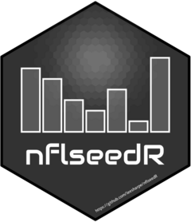

Compute NFL Regular Season Matchups
Source:R/nfl_regular_season.R
nfl_regular_season.RdUse standings of a completed season to compute all matchups (including location) of the following season based on NFL regular season schedule rules.
Arguments
- previous_season_standings
NFL standings of the previous season as computed by
nfl_standings().
Value
A data frame with one row per team/opponent matchup (this means 544 rows in a 272 games season), including the following columns:
seasonThe season following the season in
previous_season_standingsteamThe team abbreviation of the team we are looking at
oppThe team abbreviation of the team's opponent
opp_typeThe opponent type. This will be on of the following.
div_aDivisional matchup on the road
div_hDivisional matchup at home
intra_confFull division matchup intra conference
cross_confFull division matchup cross conference
div_rankSame division rank matchup intra conference
cross_17th17th game, same division rank matchup cross conference
locationEither
homeoraway. It's impossible to predict neutral site games
Details
Since the 2021 season, NFL teams play a 17 game schedule. NFL operations explains the anatomy of a schedule here https://operations.nfl.com/gameday/nfl-schedule/creating-the-nfl-schedule/.
A team's opponents are determined based on the following rules:
6 games against divisional opponents
4 games against teams from a division within its conference
4 games against teams from a division in the other conference
2 games against teams from the remaining divisions in its conference that finished the previous season on the same division rank
1 game ("the 17th game") against a non-conference opponent from a division that the team is not scheduled to play and that finished the previous season on the same division rank
The host of matchups rotates regularly. Rotation has different cycles as explained below. Here is how hosts are determined:
Each team hosts 3 division matchups
Intra conference division matchups rotate in a 6 year cycle
Cross conference division matchups rotate in a 8 year cycle
Intra conference divisional rank matchups rotate in a 6 year cylce
AFC teams host the 17th game in odd years, NFC teams host in even years
All rotation tables are stored inside nflseedR and used to compute the compete regular season matchup table.
Examples
# Compute all 2026 matchups using standings from the 2025 season
# First load games of the 2025 season
games <- nflreadr::load_schedules(2025)
# Second compute standings
standings <- nflseedR::nfl_standings(games, ranks = "DIV")
#> ℹ 14:45:50 | Initiate Standings & Tiebreaking Data
#> ℹ 14:45:50 | Compute Division Ranks
# Finally compute matchups
matchups <- nflseedR::nfl_regular_season(standings)
# Overview output
str(matchups)
#> 'data.frame': 544 obs. of 5 variables:
#> $ season : int 2026 2026 2026 2026 2026 2026 2026 2026 2026 2026 ...
#> $ team : chr "ARI" "ARI" "ARI" "ARI" ...
#> $ opp : chr "DAL" "DEN" "DET" "KC" ...
#> $ opp_type: chr "intra_conf" "cross_conf" "div_rank" "cross_conf" ...
#> $ location: chr "away" "home" "home" "away" ...